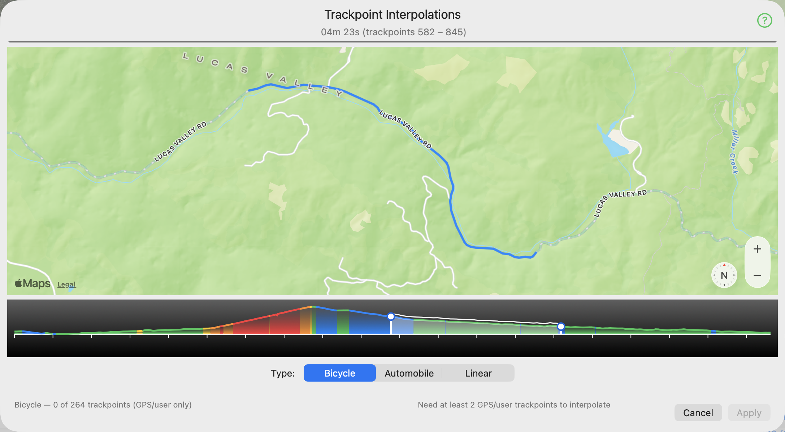
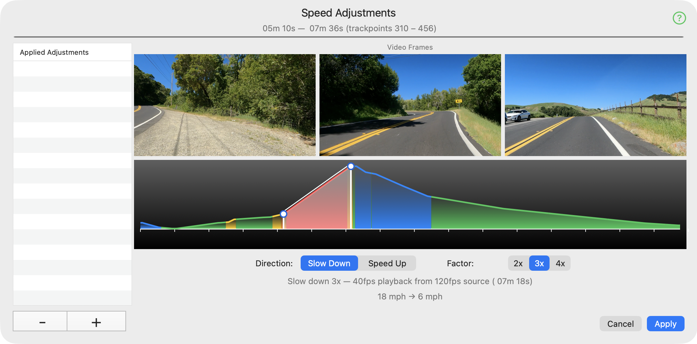

GPX-V Main Window

The Title Editor

The Video Filter Editor

The Interpolation Editor

The Speed Editor

The GPX-V Library
Go Pro Video? Strava GPX file? GPX-V is your one-stop solution for synchronized, filtered files for upload to Kinomap, Rouvy and others.
Click any of the items below to get a detailed, interactive explanation of all the controls for that feature.

